Pasos de instalación
01 Descarga
Git proporciona un enlace oficial para la descarga del instalador en windows (https://git-scm.com/install/windows). Para obtenerlo, ingresar al link y dar click al enlace de descarga de la versión Git for Windows/x64 Setup tal y como se muestra en Figura 1.
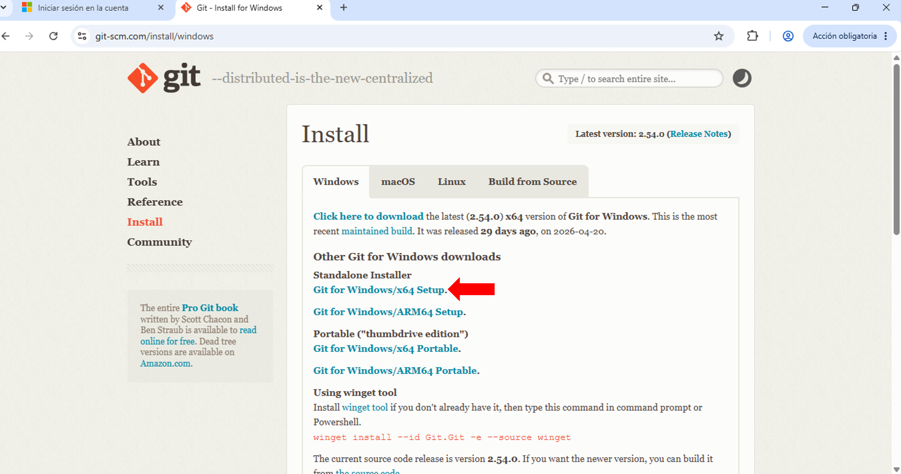
02 Instalación
Una vez descargado el instalador, lo siguiente es darle doble click para ejecutarlo y realizar los siguientes pasos en cada una de las pantallas que se nos presentan.
Licencia de uso
La primera pantalla nos muestra la licencia de uso de Git. Esta es la licencia estandarizada GNU General Public License la cual le entrega al usuario final el uso libre e irrestricto del producto. En esta pantalla solo damos click en "next/siguiente".
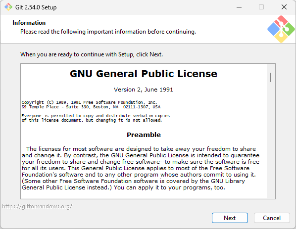
Carpeta de destino
En esta pantalla se nos pide que indiquemos la ruta en la que se va a guardar el programa. Si la ruta que aparece por defecto es parecida a la que se muestra en Figura 3 no hay cambiarla. Es decir la estructura de la ruta debe ser: C:\Users\<INTRODUCIR USUARIO DE RED>\AppData\Local\Programs\Git .
De no ser así, hay que introducir en el campo de texto proporcionado la ruta indicada anteriormente cambiando la sección <INTRODUCIR USUARIO DE RED> por el usuario de red del equipo. Una vez verificada la ruta damos click en "next/siguiente".
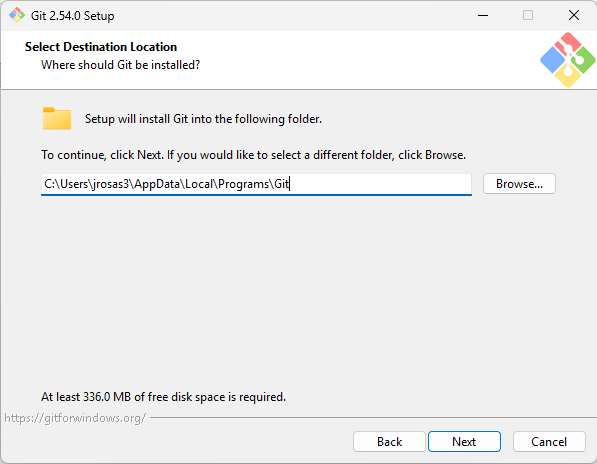
Seleccionar componentes
En esta pantalla nos piden seleccionar los componentes que deseamos instalar junto con Git. Asegurarse de tener las mismas opciones seleccionadas que en Figura 4 y después presionar "next/siguiente".
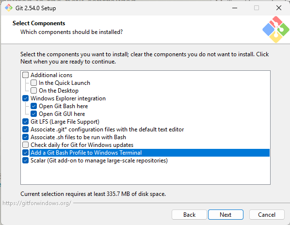
Carpeta de menu de inicio
En esta pantalla se nos pregunta bajo cual carpeta se va a agregar el programa en el menu de inicio de windows. Solo se debe presionar "next/siguiente" sin cambiar nada.
Selección de editor de texto
En esta pantalla se nos pide que indiquemos cual va a ser el editor de texto usado en Git. Es ampliamente recomendado a los que no estén familiarizados con Git usar el editor Nano. Se debe buscar la opción Use the Nano editor by default / usar el editor Nano por defecto dentro de la lista desplegable y seleccionarla tal y como se muestra en Figura 6. Posterior mente presionar "next/siguiente".
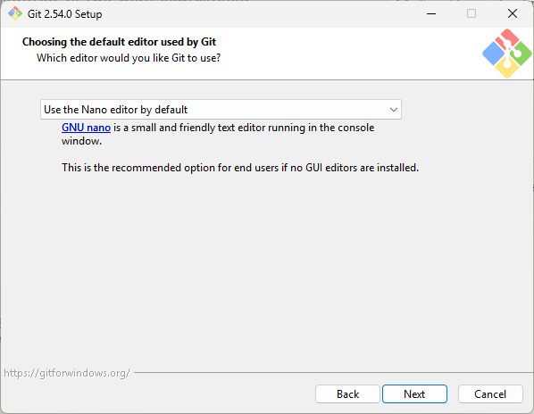
| Si no selecciona el editor nano en esta pantalla, luego más adelante se puede modificar usando comandos de Git. Sin embargo, no es un proceso amigable con un usuario que no este familiarizado con Git. Se recomienda seguir las indicaciones de esta pantalla para evitar percances. |
Selección de rama inicial
Cuando se quiere empezar a llevar un control de versiones de una carpeta o archivo con Git se debe crear una rama inicial de trabajo. En esta pantalla se nos pide definir el nombre de dicha rama inicial. Se debe seleccionar la segunda opción tal y como se muestra en Figura 7 y asegurarse que el nombre de la rama quede como main sin espacios y en minúsculas. Después dar click en "next/siguiente".
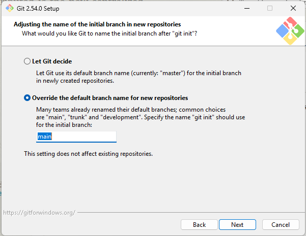
El nombre de la rama inicial tiene nada especial. Sin embargo, se recomienda utilizar main pues será el mismo nombre utilizado en el curso y esto evitará confusiones alrededor de un concepto que va a ser tratado transversalmente.
|
Ambientes de Git
En esta pantalla se nos pide indicar desde que entornos se va a permitir ejecutar Git. Seleccionar la segunda opción y presionar "next/siguiente".
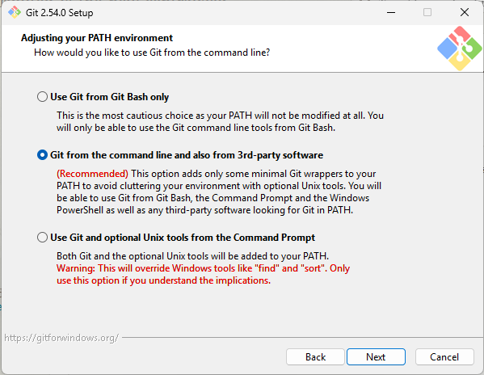
Programa para comunicación encriptada
Git utiliza openSSH para gestionar la comunicación a sitios remotos. En esta pantalla se debe seleccionar Use bundled OpenSSh / usar OpenSSH proporcionado para utilizar el paquete de OpenSSH proporcionado por Git. Posteriormente dar click en "next/siguiente".
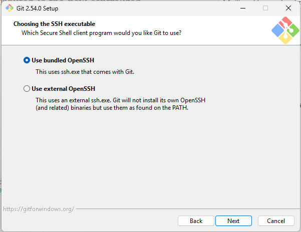
Certificados SSL
Otro protocolo de comunicación es http (el mismo que usamos al conectarnos a paginas web) el cual usa certificados SSL para verificar la seguridad del sitio. En esta pantalla se nos pide que seleccionemos de dónde va a tomar Git esos certificados. Se debe seleccionar la segunda opción para usar los certificados de windows proporcionados directamente por el administrador del equipo. Posterior mente dar click en "next/siguiente".
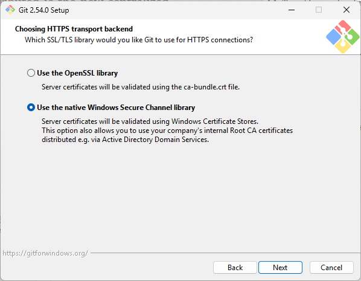
Estilo de saltos de línea
Los saltos de línea o "Enters" en un texto son codificados de forma diferente según el sistema operativo del computador que los lea. En esta pantalla se nos pide indicar la forma en la que Git va a tratar los saldos de línea. Se Debe seleccionar la primera opción y posteriormente seleccionar "next/siguiente".
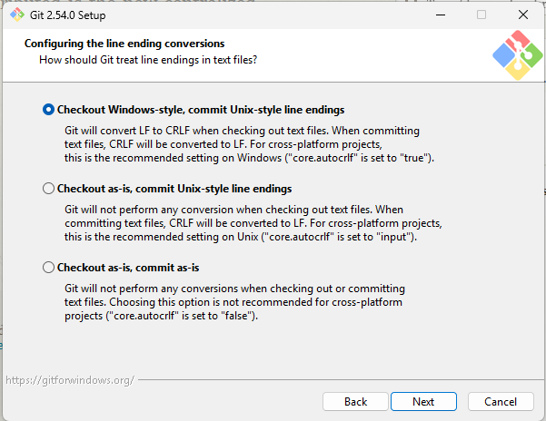
Terminal de comandos
En esta pantalla se nos pide seleccionar la terminal desde la cual se van a ejecutar los comandos de Git. Se debe seleccionar la primera opción y posteriormente dar "next/siguiente".
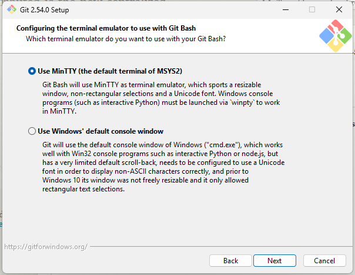
Comportamiento de pull
Pull es una función de git para traer información desde sitios remotos. En esta pantalla se nos pide indicar el comportamiento por defecto de dicha función. Se debe seleccionar la opción Fast-forward or merge y posteriormente dar click en "next/siguiente".
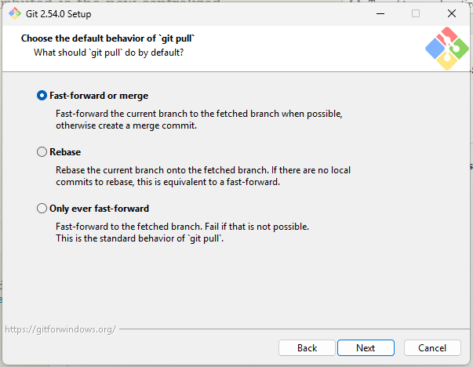
| De no seleccionar esta opción para el comportamiento de pull. Varios ejercicios tratados en el curso van a tener un resultado diferente al esperado. |
Administrador de credenciales
En esta pantalla se nos pide indicar el administrador de credenciales que queremos que use en Git a plataformas como GitHub. Se debe seleccionar la primera opción y posteriormente dar click en "next/siguiente".
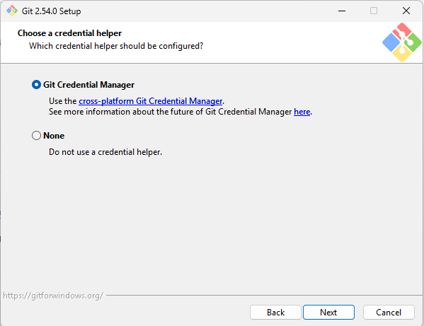
Opciones adicionales
En esta pantalla se nos pide seleccionar las opciones adicionales que queremos configurar en Git. Se deben marcar las mismas que se muestran en Figura 15 y posteriormente dar click en "install/instalar"
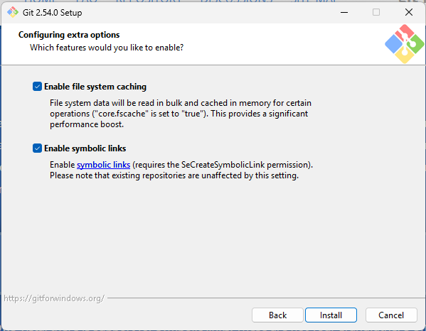
Pantalla final
Después de presionar "install/instalar" se empezará a instalar Git según las configuraciones seleccionadas. El avance va a ser indicado por una barra de progreso y cuando esta llegue al final se mostrara la pantalla mostrada a continuación. Aquí solo debemos desmarcar cada casilla y presionar "finish/terminar".
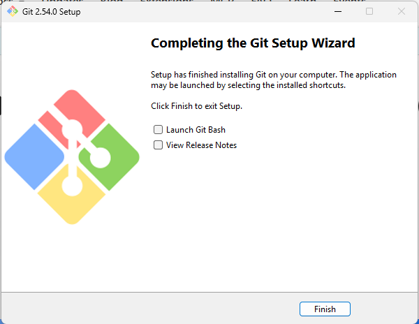
Comprobar instalación
En un principió si llegamos a la pantalla final de la sección anterior se podría asegurar que Git quedó instalado. Sin embargo, si se quiere verificar la instalación con la correcta configuración se puede oprimir la combinación de teclas 'windows' + 'r' o buscar el programa "ejecutar" en la barra de búsqueda de windows. Posteriormente dentro de este programa introducir el siguiente texto: wt -p "Git Bash" manteniendo los mismos, espacios, comillas y mayúsculas. Al presionar 'Enter' o darle al botón "Aceptar" debería aparecer una ventana como la mostrada en Figura 17.
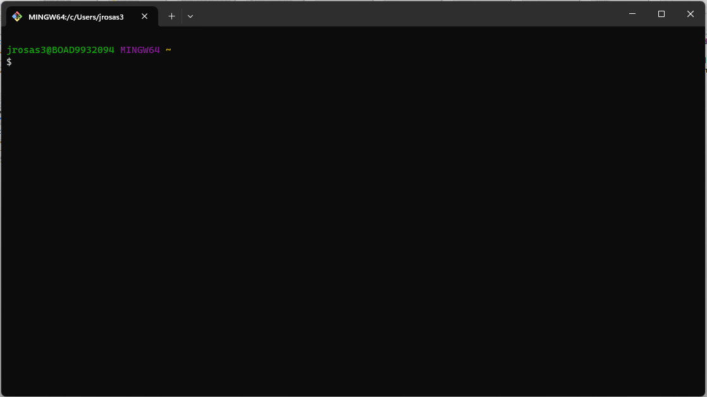
Por último en la ventana que apareció pegar el siguiente texto git config --list --show-scope y presionar 'Enter'. La salida debería ser similar a la siguiente:
system diff.astextplain.textconv=astextplain
system filter.lfs.clean=git-lfs clean -- %f
system filter.lfs.smudge=git-lfs smudge -- %f
system filter.lfs.process=git-lfs filter-process
system filter.lfs.required=true
system http.sslbackend=schannel
system core.autocrlf=true
system core.fscache=true
system core.symlinks=true
system core.editor=nano.exe
system pull.rebase=false
system credential.helper=manager
system credential.https://dev.azure.com.usehttppath=true
system init.defaultbranch=mainCon esto concluimos con la instalación de Git.
| ¡Felicidades, ya puedes empezar a escribir todos los comandos que quieras! |